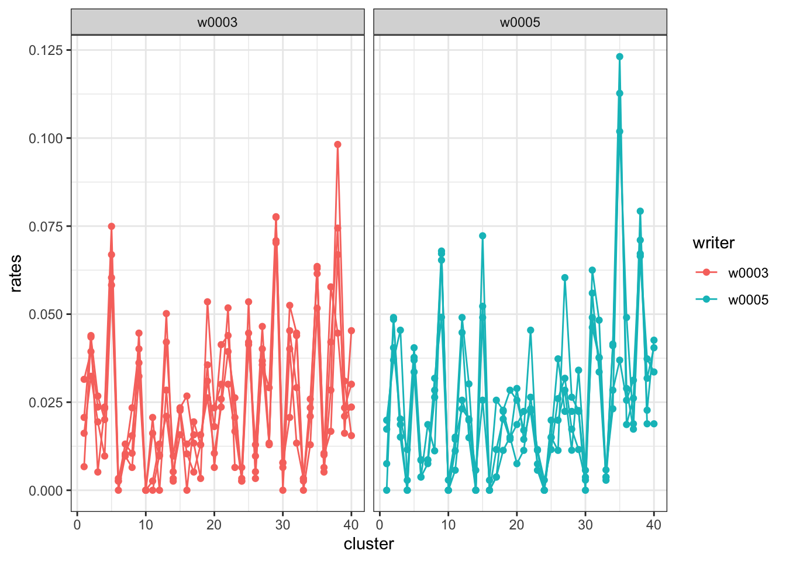
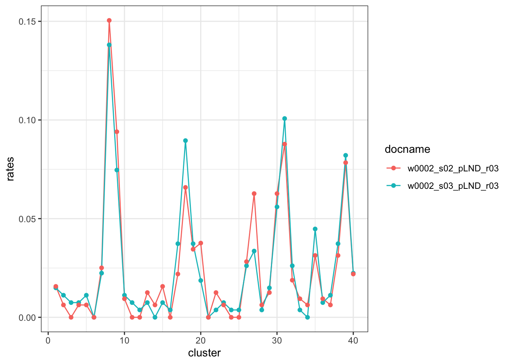

Show code
library(dplyr)
library(handwriter)
library(handwriterRF)The handwriterRF package implements the statistical method described by Madeline Johnson and Danica Ommen (2021) (doi:10.1002/sam.11566). This tutorial summarizes the method introduced in the paper and explains how to use handwriterRF to compare handwriting samples. The method employs a random forest to produce a score-based likelihood ratio (SLR), quantifying the strength of evidence that two handwritten documents were written by the same writer or different writers.
We use handwriting samples from the CSAFE Handwriting Database and the CVL Handwriting Database. These databases contain paragraph-length handwriting samples. We randomly selected two Wizard of Oz prompts and two London Letter prompts from CSAFE writers, and four prompts from CVL writers. These samples were randomly split into three sets: training, validation, and testing.
We estimated the writer profiles for all handwriting samples using the handwriter::get_writer_profiles() function and the templateK40 cluster template from handwriterRF. Behind the scenes, get_writer_profiles() performs the following steps on each handwriting sample:
handwriter::process_batch_dir().handwriter::get_clusters_batch().handwriter::get_cluster_fill_rates(). The cluster fill rates serve as an estimate of the writer profile for the sample.The train dataframe contains the estimated writer profiles for train set. Let’s visualize the writer profiles for two writers from train:

Each writer has four documents in train. We see that for each writer, the profiles are not exactly the same, but many of the spikes and valleys occur in the same clusters. We can plot all the writer profiles on the same axes to better compare the two writers.
In this plot the spikes and valleys are not all aligned. In cluster 37, writer w0003 has a small spike while w0005 has a valley. In cluster 27, writer w0005 has a taller spike that writer w0003. Intuitively, we see similarities and differences between the writer profiles in the plot. But we employ a statistical method to formally evaluate the similarities between writer profiles.
To compare writer profiles, we construct similarity scores that quantify the similarity between pairs of profiles.
First, we calculate the distances between all pairs of writer profiles in the train set. These pairs are labeled as either same writer or different writers, based on whether the profiles originate from the same writer. We then train a random forest on these labeled distances using the ranger R package. random_forest is the trained random forest.
Next, we calculate the distances between each pair of writer profiles in validation and label the pairs as same writer or different writers. The writers in validation are distinct from those in train. For each pair of writer profiles in validation, the similarity score is the proportion of decision trees in the random forest that predicted same writer. For example, if the random forest has 200 decision trees, and 160 of the trees predicted same writer, the similarity score is \(160/200=0.8\).
ref_scores contains the similarity scores for the pairs of validation samples. We downsample the the “different writer” similarity scores to equal the number of “same writer” scores following common practice. We use these similarity scores as reference when comparing test handwriting samples.
The function plot_scores() visualizes the reference scores.
The test dataframe contains writer profiles from writers not in train or validation. Let’s compare two writer profiles in the test set using the trained random forest and reference similarity scores. We’ll use the first two samples from writer w0005 as an example. First, we plot the writer profiles:

We compute the similarity score between these two test samples with compare_writer_profiles(). This score is derived using the same procedure as the validation set: we calculate the distance between the two profiles, then compute the proportion of random forest decision trees that predict “same writer.”
Calculating distance between samples...Calculating similarity score... docname1 writer1 docname2 writer2 ground_truth score
1 w0002_s03_pLND_r03 w0002 w0002_s02_pLND_r03 w0002 same writer 1Let’s visually see how the similarity score 1 compares to our reference same writer and different writers similarity scores.
A score-based likelihood ratio (SLR) is a statistical measure that evaluates the likelihood of observing a similarity score under two competing propositions:
\(P_1: \text{the handwriting samples were written by the same writer}\)
\(P_2: \text{the handwriting samples were written by different writers}\)
The SLR is the ratio of the likelihood of observing the similarity score under \(P_1\) to the likelihood under \(P_2\). To calculate the SLR, we use compare_writer_profiles() with the score_only = FALSE argument. This function applies kernel density estimation to fit probability density functions (PDFs) to the reference scores for same writer and different writer pairs. The SLR is the ratio of the height of the same writer PDF at the observed similarity score to the height of the different writer PDF at the same score. An SLR greater than 1 suggests the samples were likely written by the same writer, while an SLR less than 1 suggests the samples were likely written by different writers.
Calculating distance between samples...Calculating similarity score...Calculating SLR... docname1 writer1 docname2 writer2 ground_truth score
1 w0002_s03_pLND_r03 w0002 w0002_s02_pLND_r03 w0002 same writer 1
slr
1 254.8966---
title: "An Introduction to the SLR Model"
format: html
---
## Introduction
The `handwriterRF` package implements the statistical method described by Madeline Johnson and Danica Ommen (2021) (<doi:10.1002/sam.11566>). This tutorial summarizes the method introduced in the paper and explains how to use `handwriterRF` to compare handwriting samples. The method employs a random forest to produce a score-based likelihood ratio (SLR), quantifying the strength of evidence that two handwritten documents were written by the same writer or different writers.
## Handwriting Data
We use handwriting samples from the [CSAFE Handwriting Database](https://data.csafe.iastate.edu/HandwritingDatabase/) and the [CVL Handwriting Database](https://cvl.tuwien.ac.at/research/cvl-databases/an-off-line-database-for-writer-retrieval-writer-identification-and-word-spotting/). These databases contain paragraph-length handwriting samples. We randomly selected two Wizard of Oz prompts and two London Letter prompts from CSAFE writers, and four prompts from CVL writers. These samples were randomly split into three sets: training, validation, and testing.
## Writer Profiles
We estimated the writer profiles for all handwriting samples using the `handwriter::get_writer_profiles()` function and the `templateK40` cluster template from `handwriterRF`. Behind the scenes, `get_writer_profiles()` performs the following steps on each handwriting sample:
1. Split the handwriting into component shapes called *graphs* with `handwriter::process_batch_dir()`.
2. Sort the graphs into *clusters* with similar shapes using a cluster template and `handwriter::get_clusters_batch()`.
3. Calculate the proportion of graphs assigned to each cluster with `handwriter::get_cluster_fill_rates()`. The cluster fill rates serve as an estimate of the writer profile for the sample.
The `train` dataframe contains the estimated writer profiles for train set. Let's visualize the writer profiles for two writers from `train`:
```{r}
#| label: packages
#| output: FALSE
library(dplyr)
library(handwriter)
library(handwriterRF)
```
```{r}
#| label: profiles
wps <- train %>% dplyr::filter(writer == "w0003" | writer == "w0005")
handwriter::plot_writer_profiles(wps, color_by = "writer", facets = "writer")
```
Each writer has four documents in `train`. We see that for each writer, the profiles are not exactly the same, but many of the spikes and valleys occur in the same clusters. We can plot all the writer profiles on the same axes to better compare the two writers.
```{r}
#| label: profiles-combined
plot_writer_profiles(wps, color_by = "writer")
```
In this plot the spikes and valleys are not all aligned. In cluster 37, writer w0003 has a small spike while w0005 has a valley. In cluster 27, writer w0005 has a taller spike that writer w0003. Intuitively, we see similarities and differences between the writer profiles in the plot. But we employ a statistical method to formally evaluate the similarities between writer profiles.
## Constucting Reference Similarity Scores with a Random Forest
To compare writer profiles, we construct similarity scores that quantify the similarity between pairs of profiles.
### Training a Random Forest
First, we calculate the distances between all pairs of writer profiles in the `train` set. These pairs are labeled as either *same writer* or *different writers*, based on whether the profiles originate from the same writer. We then train a random forest on these labeled distances using the ranger R package. `random_forest` is the trained random forest.
### Calculating Reference Similarity Scores
Next, we calculate the distances between each pair of writer profiles in `validation` and label the pairs as same writer or different writers. The writers in `validation` are distinct from those in `train`. For each pair of writer profiles in `validation`, the similarity score is the proportion of decision trees in the random forest that predicted same writer. For example, if the random forest has 200 decision trees, and 160 of the trees predicted same writer, the similarity score is $160/200=0.8$.
`ref_scores` contains the similarity scores for the pairs of `validation` samples. We downsample the the "different writer" similarity scores to equal the number of "same writer" scores following common practice. We use these similarity scores as reference when comparing test handwriting samples.
The function `plot_scores()` visualizes the reference scores.
```{r}
#| label: ref-scores
plot_scores(ref_scores)
```
## Compare Two Test Handwriting Samples
The `test` dataframe contains writer profiles from writers not in `train` or `validation`. Let’s compare two writer profiles in the `test` set using the trained random forest and reference similarity scores. We’ll use the first two samples from writer `w0005` as an example. First, we plot the writer profiles:
```{r}
#| label: example-profiles
test_samples <- test[test$writer == "w0002",][1:2,]
handwriter::plot_writer_profiles(test_samples)
```
### Similarity Score
We compute the similarity score between these two test samples with `compare_writer_profiles()`. This score is derived using the same procedure as the validation set: we calculate the distance between the two profiles, then compute the proportion of random forest decision trees that predict "same writer."
```{r}
#| label: example-score
score <- compare_writer_profiles(test_samples)
score
```
Let's visually see how the similarity score `r score$score` compares to our reference same writer and different writers similarity scores.
```{r}
#| label: plot-score
plot_scores(ref_scores, obs_score = score$score)
```
### Score-based Likelihood Ratio
A score-based likelihood ratio (SLR) is a statistical measure that evaluates the likelihood of observing a similarity score under two competing propositions:
$P_1: \text{the handwriting samples were written by the same writer}$
$P_2: \text{the handwriting samples were written by different writers}$
The SLR is the ratio of the likelihood of observing the similarity score under $P_1$ to the likelihood under $P_2$. To calculate the SLR, we use `compare_writer_profiles()` with the `score_only = FALSE` argument. This function applies kernel density estimation to fit probability density functions (PDFs) to the reference scores for same writer and different writer pairs. The SLR is the ratio of the height of the same writer PDF at the observed similarity score to the height of the different writer PDF at the same score. An SLR greater than 1 suggests the samples were likely written by the same writer, while an SLR less than 1 suggests the samples were likely written by different writers.
```{r}
#| label: slr
slr <- compare_writer_profiles(test_samples, score_only = FALSE)
slr
```